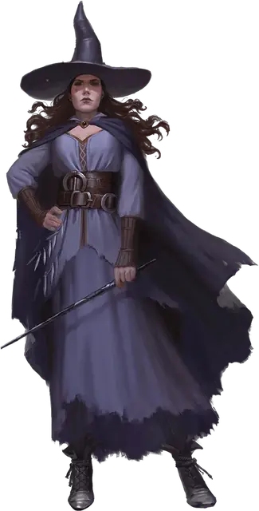

Таша, ведьма
Tasha the Witch
Средний Гуманоид (Человек, Волшебница), хаотично-нейтральный, именной НИП

Класс Доспеха 19 (мантия архимага [robe of the archmagi])
Хиты 210 (28к8 + 84)
Скорость 30 футов
| мод | спас | ||
|---|---|---|---|
| СИЛ | 10 | +0 | +0 |
| ЛОВ | 18 | +4 | +4 |
| ТЕЛ | 17 | +3 | +3 |
| мод | спас | ||
|---|---|---|---|
| ИНТ | 23 | +6 | +12 |
| МДР | 12 | +1 | +7 |
| ХАР | 22 | +6 | +12 |
Навыки История +12, Магия +18, Убеждение +12
Иммунитет к состояниям испуг, очарование
Чувства пассивное Восприятие 11
Языки Общий, Бездны, Драконий, Инфернальный, Небесный, Сильван, Эльфийский
Опасность 19 (22000 опыта)
Бонус мастерства +6
Особенности
Легендарное сопротивление (3/день). Если Таша проваливает спасбросок, она может вместо этого сделать спасбросок успешным.
Сопротивление магии. Таша совершает с преимуществом спасброски от заклинаний и прочих магических эффектов (эта особенность даруется ей мантией архимага [robe of the archmagi]).
Особое снаряжение. Таша облачена в мантию архимага [robe of the archmagi].
Действия
Мультиатака. Таша совершает две атаки Едким зарядом, затем один раз использует Психическую плеть.
Едкий заряд. Рукопашная или дальнобойная атака заклинанием: +14 к попаданию, досягаемость 5 футов или дистанция 120 футов, одна цель. Попадание: 21 (6к4 + 6) урона кислотой.
Психическая плеть. Таша психически хлещет одно существо, которое она видит в пределах 90 футов. Цель должна совершить спасбросок Интеллекта Сл 20. При провале цель получает 21 (6к6) урона психической энергией и становится ошеломлённой до начала следующего хода Таши. В случае успеха цель получает только половину урона, не становясь ошеломлённой.
Использование заклинаний. Таша накладывает одно из следующих заклинаний, используя Интеллект в качестве базовой характеристики (Сл спасброска от заклинаний 22, +14 к попаданию атаками заклинаниями):
• Неограниченно: обнаружение магии [detect magic], маскировка [disguise self], свет [light], волшебная рука [mage hand], сообщение [message], фокусы [prestidigitation], жуткий смех Таши [Tasha's hideous laughter]
• 3/день каждое: превращение [polymorph]
• 1/день каждое: лабиринт [maze], телекинез [telekinesis]
Бонусные действия
Облик Бездны (2/день). На 1 минуту Таша получает скорость полёта в 30 футов, иммунитет к урону ядом и отравлению, а также получает преимущество на броски атак по существам, у которых хиты ниже максимума.
Реакции
Мистический отпор. Сразу же после того, как Таша получает урон, она выплескивает мистическую энергию сферой радиусом в 10 футов с центром на себе. Все остальные существа в этой области должны совершить спасбросок Ловкости Сл 20, получая 19 (3к12) урона электричеством при провале или половину этого урона при успехе. Затем Таша телепортируется вместе со всем несомым и носимым снаряжением на расстояние до 60 футов в свободное пространство, которое она видит.
Описание
Путь Таши к величию начался, когда ее удочерила колдунья по имени Баба Яга, назвавшая её Наташей. В дальнейшем Таша создавала множество заклинаний, в том числе жуткий смех Таши [Tasha's hideous laughter], а её магический потенциал привел к взаимодействию с демонами и лордами демонов, которых она подчиняла и использовала против своих врагов. На Материальном Плане она стала известна под прозвищем Иггвилв «Королева ведьм», и написала демономикон Иггвилв [demonomicon of Iggwilv] — величайший из всех трактатов о Бездне и её демонических обитателях. В последние годы Таша уединилась в Стране Фей, обретя невероятную силу и постепенно превращаясь в Фею. Таша стала Зубилной, архифеей домена Призмир.
Ответ на призыв
Когда Зубилна получила призыв Алустриэль Сильверхэнд присоединиться к борьбе с Векной, то её присуствие было крайне необходимо в Призмире. Для того, чтобы почтить давнюю дружбу Таши с Алустриэль, Зубилна в качестве компромисса отправила на помощь волшебнице свою версию из прошлого. Таша, которая появляется в этом приключении, — могущественная заклинательница, но ещё не носит титул «Королевы ведьм» и не является архифеей.